Ho Chi Minh City’s neighborhoods were shaped by their colonial history. Later on, industrialization and
urbanization left their mark as well. Today, the city consists of 24 districts: 19 central ones and five
suburban districts. Visiting them all, even though it would be worth it, would take you weeks and maybe
even
months! So we made it easier for you and selected our five favorite ones.
District 1
District One is also known as the city center. There are lots of tourist attractions,
including culture, food and shopping. This prime area is a vibrant part of town that gives you a good
idea of what Ho Chi Minh City is really like. It’s also the business and commercial heart of the city
with banks, consulates and administrative buildings.
Where To Stay
Rex Hotel Saigon
Rex Hotel Saigon was first built by the colonial French in the 1920s.
Since
then, thanks to some extensions and renovations, the place has turned into one of the most
desirable hotels in all of Ho Chi Minh. The hotel is surrounded by some of the most beautiful
buildings, like the Saigon Opera House and the People’s Committee Hall. No need to say that the
view from the Rex Rooftop Garden alone is a reason to come and stay here.
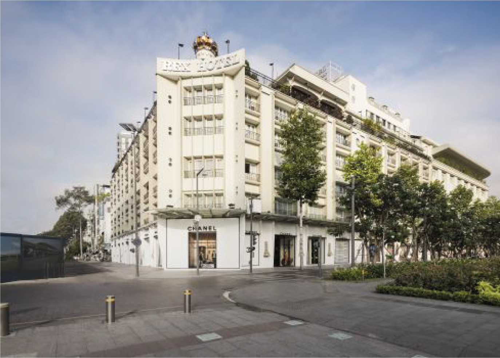
Website: https://www.rexhotelsaigon.com/
EdenStar Saigon Hotel & Spa
First things first: free minibar. You should be on EdenStar Saigon Hotel
& Spa’s website already to book yourself a room. On top of that, there’s an outdoor swimming
pool, a breakfast buffet that will almost make you forget to go sightseeing and a very highly
recommended spa. We’re not going to lie, this is obviously not a budget hotel. But it will be
every Dong, we promise!
If you’re in for some authentic street food, old school Vietnam style,
head down to Co Giang Street. Tucked away at the South end of the backpacker district, food
stalls here don’t have to compete with mini markets or Western restaurants like in many other
street food areas. This is local street life at its best. Sizzling barbecues, whooshing woks and
nothing but smoke, the smell of freshly cooked food and laughter in the air. Bon appétit!
Anan Saigon
Street food-inspired dishes on a fine dining Vietnamese menu. That’s
exactly what award-winning chef Peter Cuong Franklin does at Anan Saigon. South-Asian flavors
and fresh-market ingredients are the base for a tasting menu, five or seven courses, and they’re
all meant for sharing. Anan means ‘eat eat’ by the way, and since this is Ho Chi Minh’s hottest
rooftop restaurant, you better listen!
Website: https://www.facebook.com/anansaigon
What To Do
Notre Dame Cathedral
The Notre Dame Cathedral is a little piece of France and one of the most
prominent tourist attractions in Ho Chi Minh City. A beacon of Catholicism, in the middle of a
mainly Buddhist city. Red bricks, imported out of Marseille, stained glass and two bell towers.
A fine example of that typical neo-Romanesque style. And the church is still in use too! If
you’re interested, Sunday mass is at 9.30am.
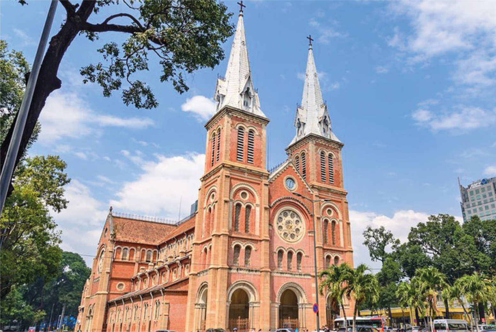
Bitexco Financial Tower
The Bitexco Financial Tower is Ho Chi Minh City’s second tallest
building, 848 feet of steel and Belgian glass. There’s a helipad on the 52nd floor, shaped like
a blossoming lotus bud, and every floor is a little different, giving the building its unique
shape. But the real reason why this building deserves your attention is the Saigon Skydeck on
the 49th floor. An observation deck with a 360-degree panoramic view over the city of Ho Chi
Minh. Don’t forget your camera!
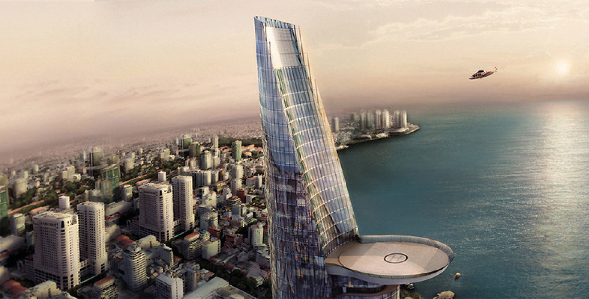
District 2
District Two is also known as D2 or Thao Dien. Historically it was one of the poorest
areas in the city because the Saigon river literally cut it off from the city’s center. Nowadays,
development and urbanization have transformed the district into one of the most exclusive ones. It’s
known for its gyms, spas and co-working hubs and it’s definitely the most Western district in Ho Chi
Minh City.
Where To Stay
Mia Saigon
A private urban sanctuary where space, style and luxury meet. That’s what
you can read on Mia Saigon’s website and we can only agree. Located right next to the Saigon
river and surrounded by art galleries, fancy restaurants and everything District Two is famous
for. This Art Deco Boutique Hotel is all you could ever dream of.
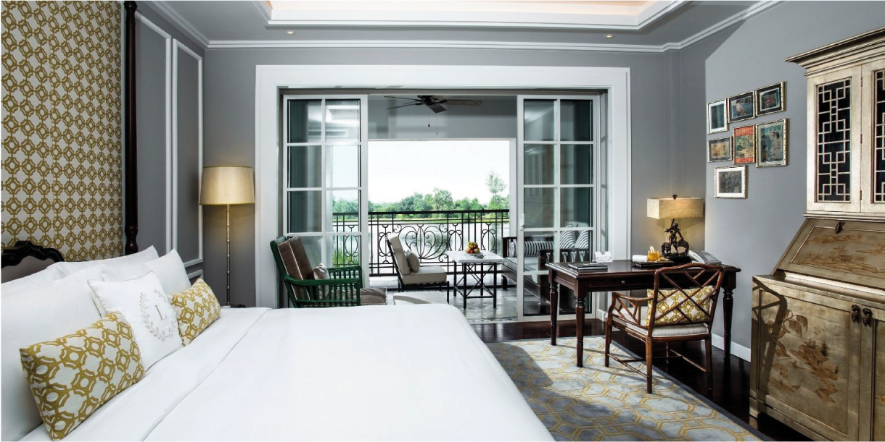
Website: https://www.miasaigon.com/
Villa Song Saigon
Villa Song Saigon is just another perfect example of District Two’s class
and glamour. Located next to the Saigon river, gorgeous and serene, and decorated with style and
elegant colors. If you’ve been in the vibrant center of the city all day and in need of some
tranquility and intimacy, this is the hotel for you.
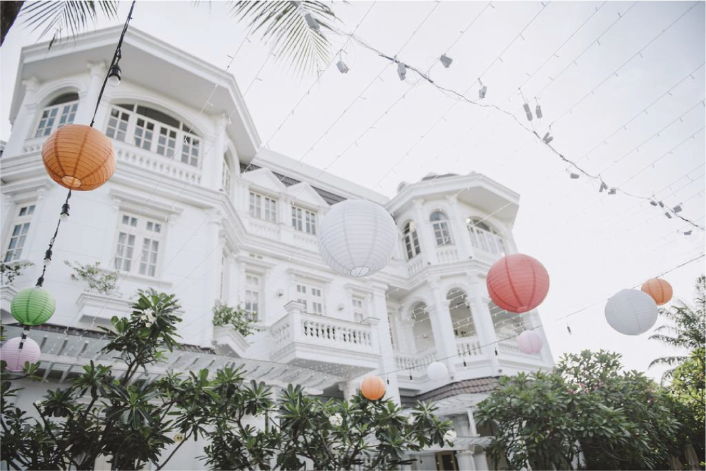
Website: https://villasong.com/
Where To Eat
The Deck
The romantic setting alongside the Saigon River, an elegant interior
designed by the best local designers, a wooden deck surrounded by bamboo trees and a fish pond
and, of course, a delicious pan-Asian menu. You should be convinced already. The Deck Saigon is
a classy restaurant loved by both tourists and locals and rightly so!
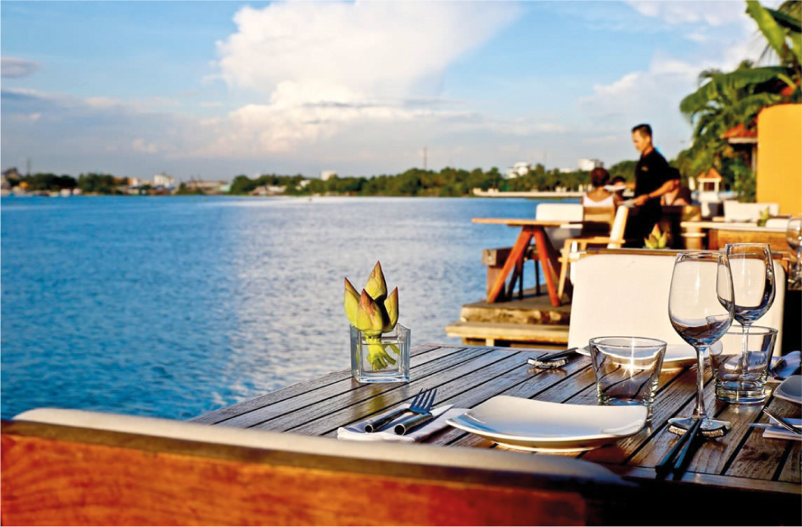
Website: https://www.thedecksaigon.com/
Quan Bui Saigon
Quan Bui has been a household name in District One since forever, they
already have four restaurants over there, and now they have expanded into District Two as well!
Yes! Their concept is simple: authentic Vietnamese food in a very cool atmosphere. And the Old
World Saigon interior is very cool too!
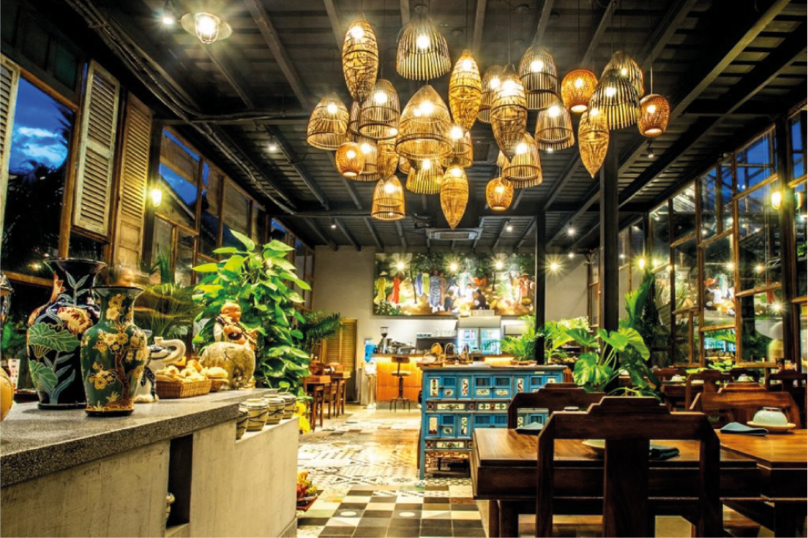
Website: https://quan-bui.com/
What To Do
The Factory Contemporary Arts Centre
If you’re into art, you should definitely visit The Factory Contemporary
Arts Centre, the very first purpose-built space for contemporary art in Vietnam. Artist and
owner Tia-Thuy Nguyen invites national and international artists to talk about their work, make
live art or to host exhibitions, workshops, talks and film screenings. While doing that, she
always bears the needs of the local community in mind. A wonderful project!
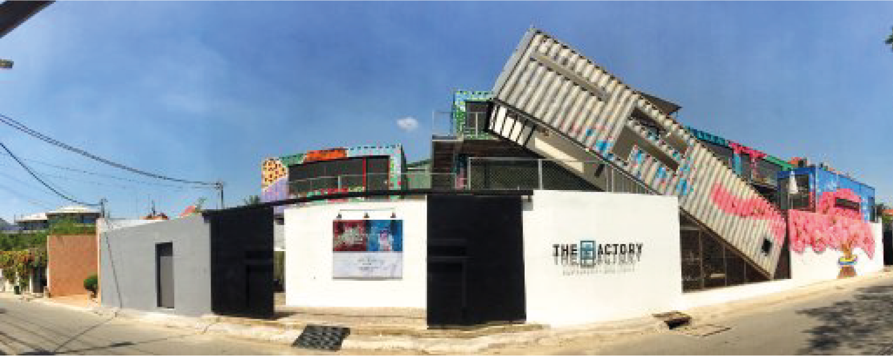
Website:
https://factoryartscentre.com/en/home/
Saigon Outcast
Saigon Outcast focusses on organizing events that bring the community
together. It began with just three shipping containers but quickly turned into a chill spot
where people from the neighborhood (and tourists, obviously) can enjoy food, craft beer,
festivals, alternative conferences and music. And for those who like sports, they also have a
giant rock-climbing wall! Ladies climb for free on Wednesdays, men on Thursdays.
Website: https://www.saigonoutcast.com/
District 3
If you’re into colonial architecture District Three is your place to be. It’s a
beautiful mix of old and new with temples, great restaurants, parks and a lot of street food. And
shopping, both cheap, middle- and high end. There’s really something for everyone here.
Where To Stay
Hotel Des Arts Saigon
Hotel Des Arts Saigon takes you all the way back to the roaring 30s in
Vietnam, but with a twist. The hotel is a perfect combination of that typical French Indochina
class and nowadays modernism. Extra plus? The owner displays his own art collection throughout
the hotel, paintings and antiques, so if sleeping in a museum has always been on your bucket
list, you know what to do!
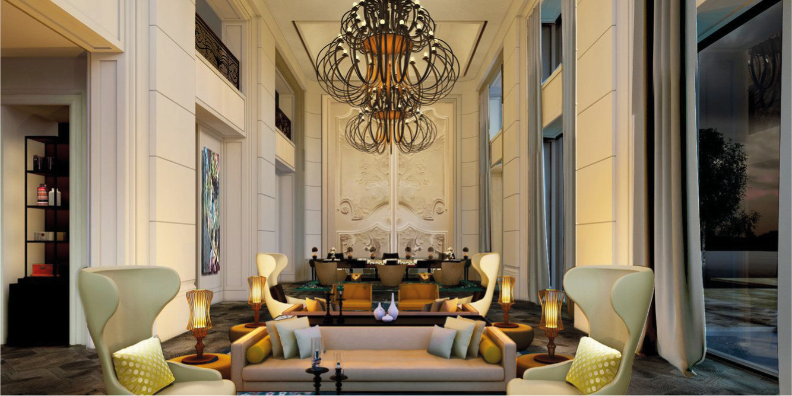
Website: https://www.hoteldesartssaigon.com/
The Hut Boutique Hotel – Notre Dame
When you walk into The Hut Boutique Hotel, you feel like you’re entering
a whole new hipster world. Clean and minimal, but cozy too, thanks to the use of industrial wood
and lots of greenery in every room. There’s even a hanging chair! Accents of black steel
complete the picture, this is one of the most beautiful hotels in the district.
A natural and clean oasis in the buzzing city, that’s Social Club Saigon,
according to the owners. The rooftop terrace breathes luxury, with its comfortable lounge sofas
and classy bar stools. There’s even an infinity pool, in case you like your panoramic views and
cocktails with a refreshing plunge. Needless to say the food lives up to the same standards. One
of our favorites!
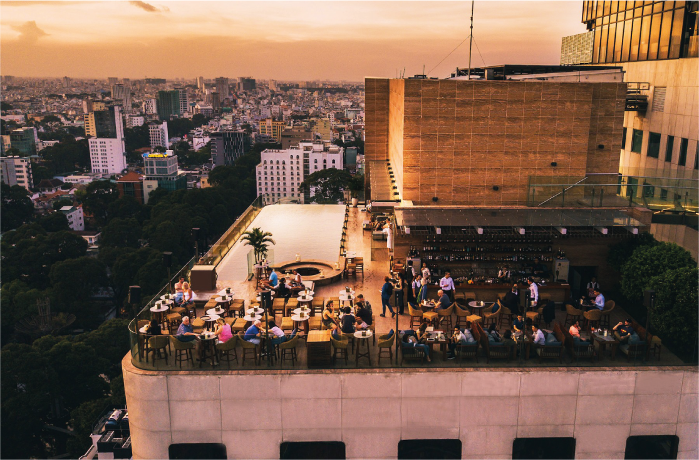
Website: https://www.thedecksaigon.com/
Ly Club Saigon
If you’re in for a fancy night out, Ly Club is the place for you.
Contemporary, classy and, obviously, serving delicious food. You can eat some of the city’s best
Asian Fusion in here, some even say it’s a Michelin level fine dining experience. Read as: make
sure you suit up!
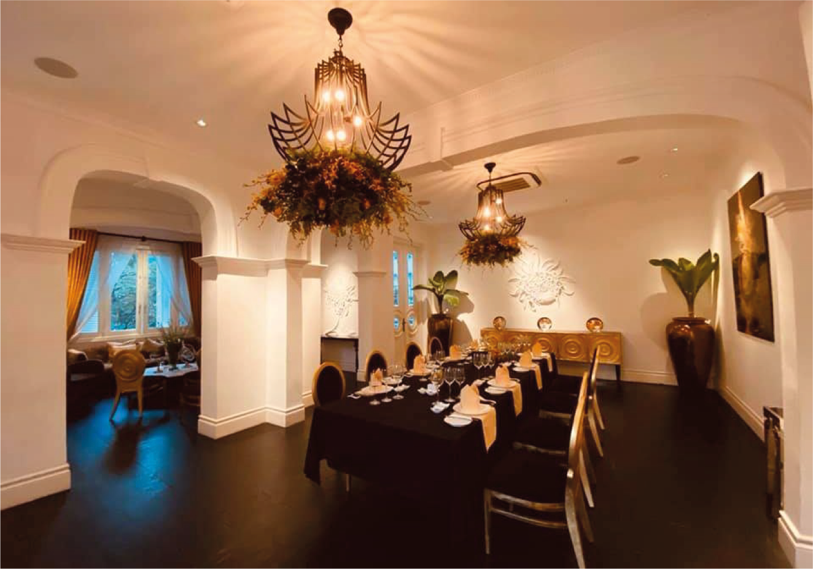
Website: http://www.lyclub.vn/saigon/
What To Do
Xa Loi Pagoda
Xa Loi Pagoda used to be the headquarters of Buddhism in Vietnam, so this
is not your ordinary temple. However, it is most famous for other things. First of all, it was
the home of Thich Quang Duc, a monk who burned himself to death to protest against religious
persecution. A series of raids followed and the police eventually took over the Buddhist civil
rights organization violently. A beautiful place, with great historical significance.
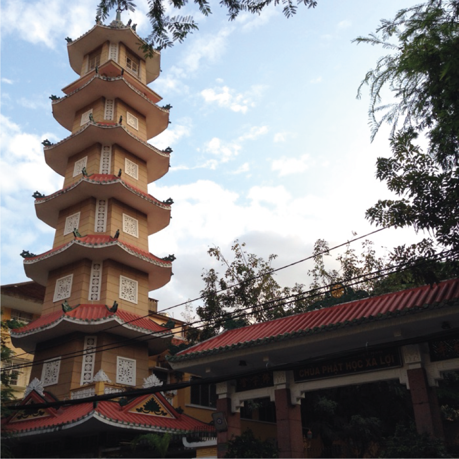
War Remnants Museum
If you visit one museum in Ho Chi Minh City, make it the War Remnants
Museum. Gain insight into the war between the United States and Vietnam ánd the impact on
Vietnamese civilians. From artillery pieces and bombs to disturbing photographs. There’s even a
floor about the French and South Vietnamese prisons on Phu Quoc and Con Son islands. A museum
that will definitely move you.
District Five is home to Vietnam’s very own Chinatown. Locals refer to it as ‘Cho
Lon’. This is the place for ornamental decorations everywhere, lanterns, holiday celebrations and lots
of historical and cultural Chinese heritage!
Where To Stay
The Common Room Project
The Common Room Project is a hostel, but definitely not as you know it.
It’s a 48-bed art house for those who are looking for a luxury experience on a budget, as they
say so themselves. It’s the perfect place if you’re traveling alone and want to meet new people,
but also for couples and groups of family and friends. They have games, lounges,
instruments,…They serve both local and Western food and they even offer Vietnamese cooking
classes. And then we didn’t even mention the rooftop bar yet. Not a common place at all!
The Windsor Plaza Hotel is a truly world-class hotel. Three award-winning
restaurants, a terrace bar, a modern fitness center and a top-of-the-notch spa. And did we
mention the five stars yet? With its 25 floors, the luxury hotel literally towers above the
Cholon District, so stunning views are included too. A perfect choice if you’re looking for a
place to stay in Ho Chi Minh City!
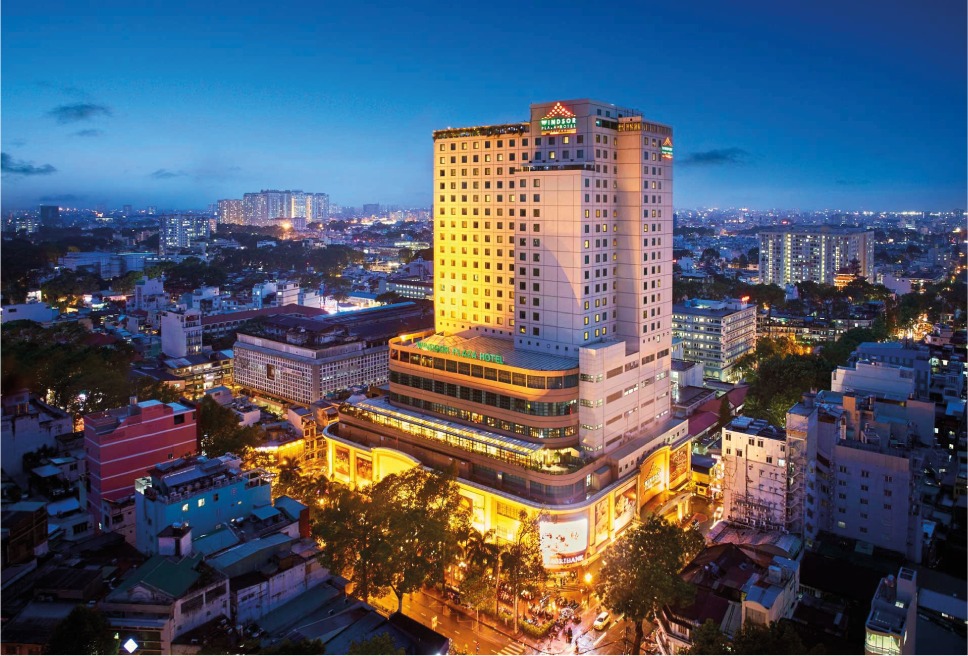
Website:https://www.windsorplazahotel.com/
Where To Eat
Tan Nguyen Thai
When a restaurant is always fully packed, you know you’ve come to a good
place. Tan Nguyen Thai serves the best dumplings in town, according to both Vietnamese locals
and Chinese expats. Their menu is over ten pages long and there’s literally not one bad dish on
it. Make sure you come here with a group of friends so you can try as much as possible!
Okay, we’re in Chinatown, but this pho joint is an obligatory stop when
you're in Ho Chi Minh City. With its piping hot, but mouthwatering, soup, Saigon beer and
plastic stools, this place proves you don’t need fancy decoration to be one of the best places
around. Sometimes local charm, delicious broth and fresh herbs are all you need. Enjoy!
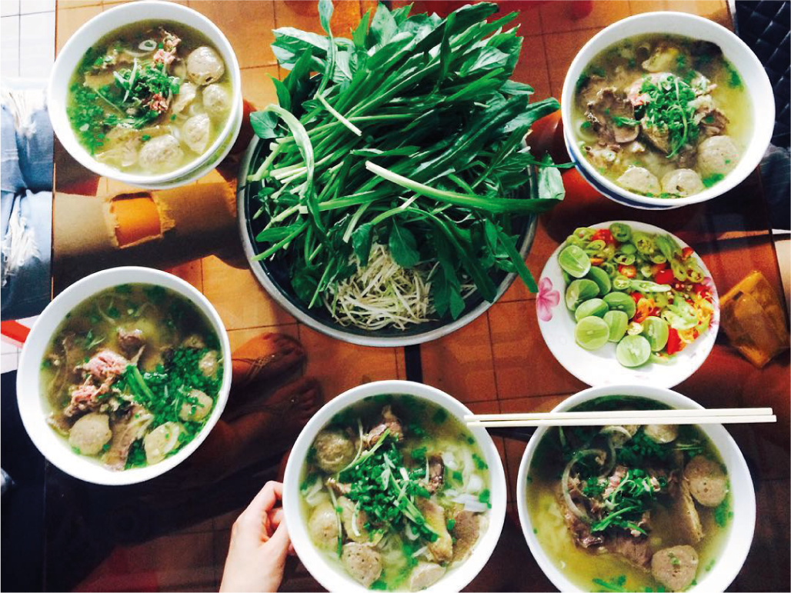
Website: http://www.phole.vn/
What To Do
Binh Tay Market
The locals do their grocery shopping at Binh Tay Market, buying
vegetables and fresh herbs in the early morning, which is always a good sign. The market,
located in Chinatown, is one of the biggest and liveliest in the city, and it’s a little less
touristy than the famous Ben Thanh Market. There’s an outside wet market and an inside food
court, but you can also buy some beautiful fabrics here, like silk, or handicrafts in bulk.
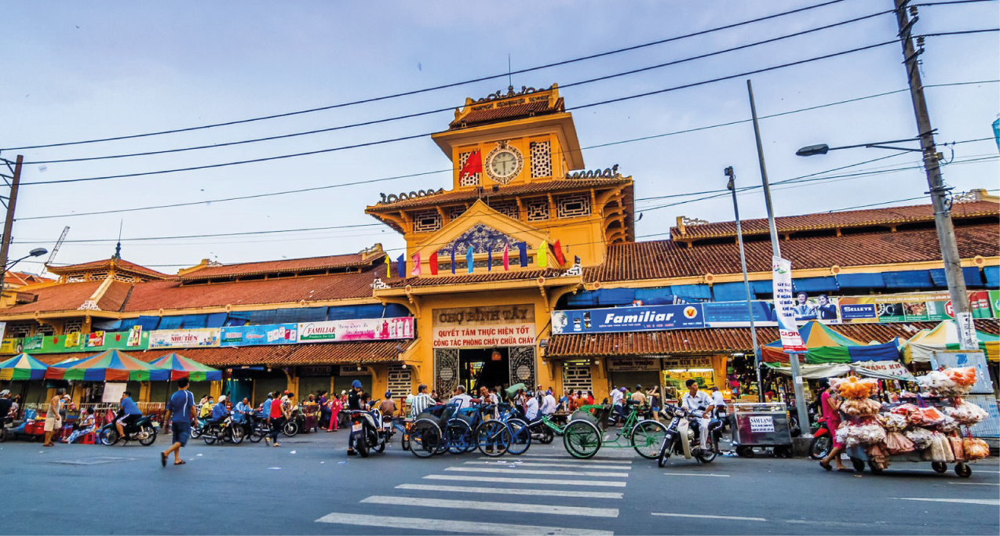
Quan Am Pagoda
The Quan Am Pagoda is a Chinese-style Buddhist pagoda. It is named after
the Goddess of Mercy, Quan The Am Bo That, literally ‘the Bodhisvatta who listens to the cries
of the world. Ain’t that beautiful or what? On top of that, it is one of the most beautiful and
colorful temples in Ho Chi Minh City’s Chinatown and therefore a must-visit!
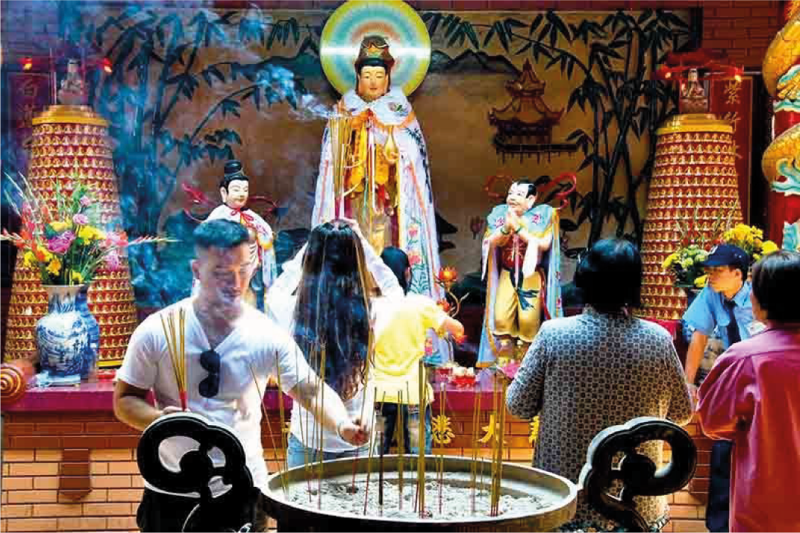
District Phu Nhuan
We’re not gonna lie, getting to the Phu Nhuan District can be quite challenging,
but crossing that distance is definitely worth it, especially if you are on a budget. From food to
accommodation, everything is way cheaper over here.
The district is home to many expats and Vietnamese youngsters and therefore very much alive. Also,
the street food is amazing!
Where To Stay
The Alcove Library Hotel
A floor-to-ceiling library stacked with the best books, fiction or
non-fiction, you can think of. And that’s only the lobby of the Alcove Library Hotel.
There’s no boutique hotel quite like this in the city, or maybe even the world, and
definitely not for that price! Staying here is an experience. And oh, you can read the books
too!
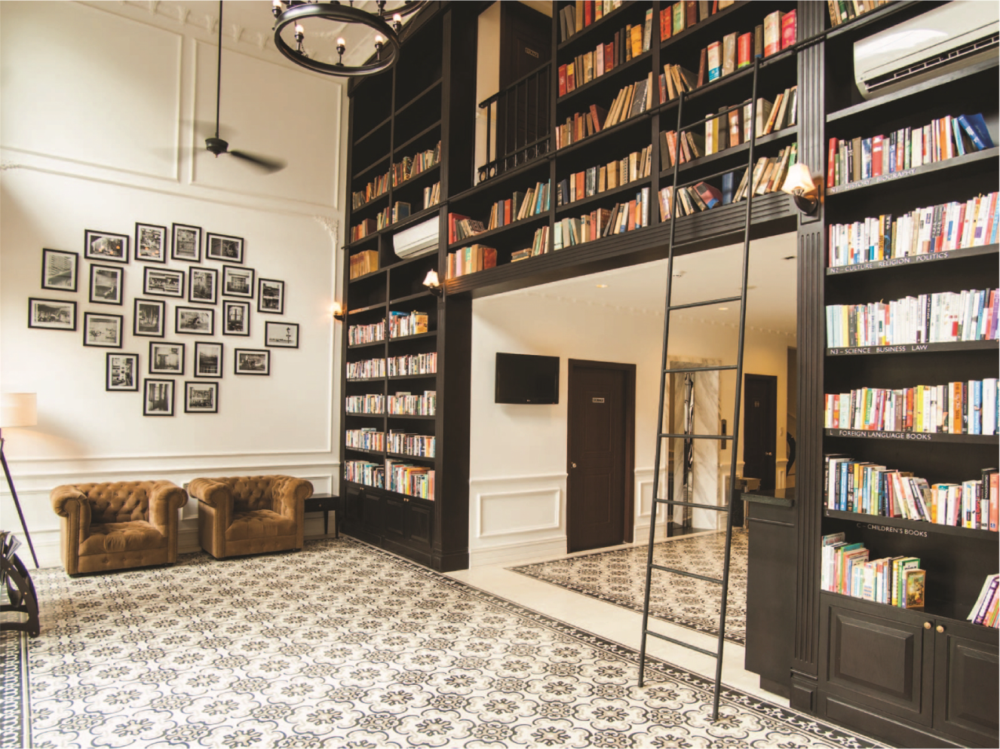
Website: http://alcovehotel.com.vn
Eastin Grand Hotel Saigon
A large outdoor pool, three (yes, three) delicious restaurants, a
fitness center and upscale services. And all of that in an elegant and classic interior with
dark wood furniture, Chesterfield armchairs and the softest bed linen. The Eastin Grand
Hotel is a solid pick if you’re looking for a luxurious and peaceful oasis in a city that
never sleeps.
When you walk in, you are welcomed by the sound of flowing water
coming from a small pond and some lovely welcome music. The Here & Now restaurant wants to
make you feel relaxed and at peace in the busy city of Ho Chi Minh and they definitely
accomplish that. And then you haven’t even tried the food yet, a tasty traditional Asian
cuisine with a modern twist. You’ll love this place even when you’re not vegetarian or
vegan.
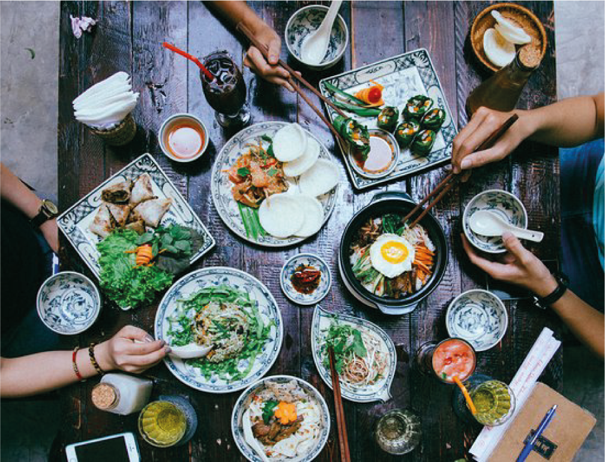
Website: https://hereandnowvietnam.com/en/
San Fu Lou
San Fu Lou’s slogan is ‘delectable, nutritional, hygienic’. Sounds a
bit boring, right? But what they actually mean is they serve fresh food only using the best
ingredients while making sure you’re getting in all the nutrients you need. From dim sum and
dumplings to salted egg buns, hand-pulled noodles and Peking duck. This is Cantonese food at
its best.
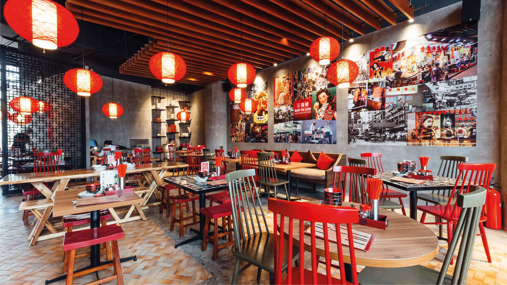
Website: https://sanfulou.com/en/home/a
What To Do
Gia Dinh Park
Walk in the park? Then head to Gia Dinh Park! Once Ho Chi Minh City’s
first golf course, but now turned into the city’s biggest park. Endless grass fields, giant
trees, running paths and a children’s playground. What’s not to like? And when you’re in
town during the Tet Holiday, don’t miss out on the Spring Flower Festival!
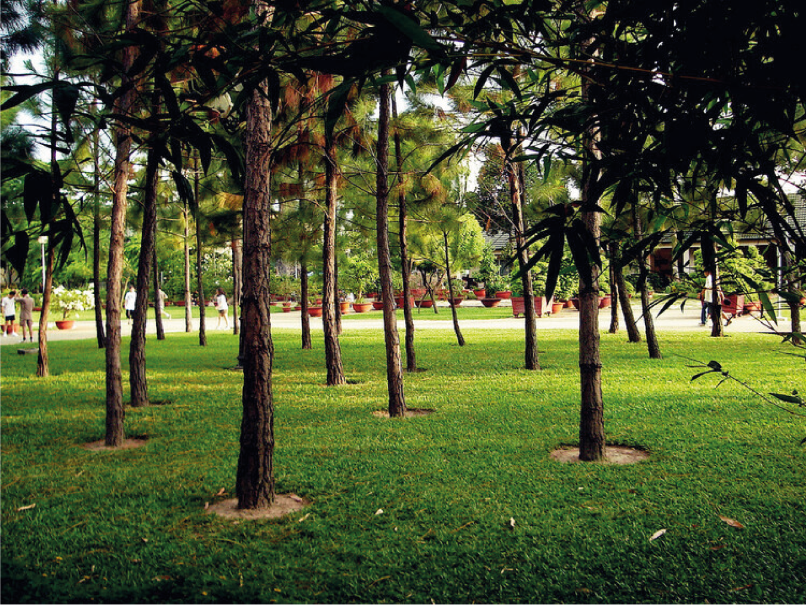
Phu Nhuan
When you’re in Vietnam, you have to try that famous Vietnamese coffee
and Phu Nhuan is definitely the place where you need to go for that. The district is known
for its thriving coffee scene, with a wide range of coffee shops. If you want some peace and
quiet, go to Tram Café or Pergola. If you like it a little quirky Wheel House Cafe, Up Café
or Fig are the places for you. And while you’re in the neighborhood, make a stop at Luu Gia
Café too for a taste of their egg coffee!